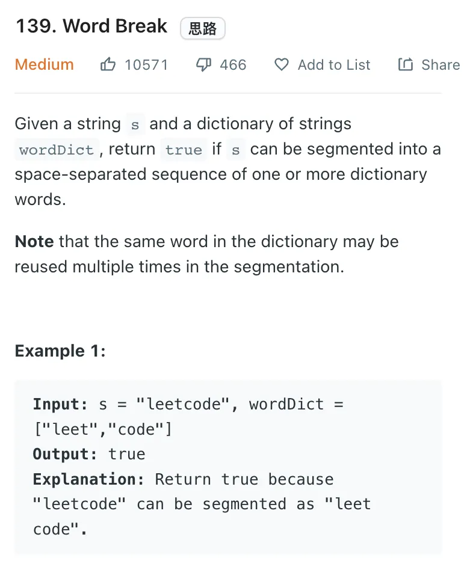
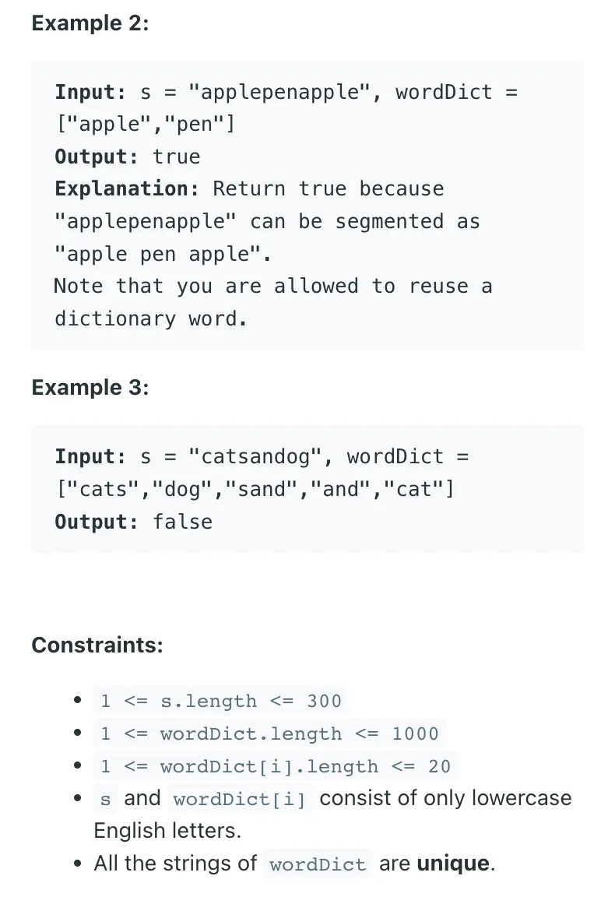

139. Word Break
考過的公司：Asked by: Amazon, Bytedance, Google
Question


✍🏽 My Solution
Runtime: 11 ms, faster than 47.00% of Java online submissions for Word Break. Memory Usage: 47.5 MB, less than 22.66% of Java online submissions for Word Break.
class Solution {
public boolean wordBreak(String s, List<String> wordDict) {
Set<String> wordDictSet = new HashSet(wordDict);
int n = s.length();
boolean[] dp = new boolean[n+1];
dp[0] = true;
for (int i = 1; i <= n; i++) {
for (int j = 0; j < i; j++) {
// 有一次成功就可以退出这次循环了
if (dp[j] && wordDictSet.contains(s.substring(j, i))) {
dp[i] = true;
break;
}
}
}
return dp[n];
}
}
🧠 Thought Process
- What is the time/space complexity of my solution? How do I know?
- time: O(n^3)
- space: O(n)
Solution #1 [王爭]
Runtime: 2 ms, faster than 96.41% of Java online submissions for Word Break.
Memory Usage: 40.2 MB, less than 99.18% of Java online submissions for Word Break.
class Solution {
public boolean wordBreak(String s, List<String> wordDict) {
int n = s.length();
boolean[] dp = new boolean[n+1];
dp[0] = true;
for (int i = 1; i <= n; i++) { // i表示長度
for (String word : wordDict) { // 走法
int len = word.length();
int startp = i-len;
if (startp >= 0 && s.startsWith(word, startp) && dp[i-len]) {
dp[i] = true;
break;
}
}
}
return dp[n];
}
}
Explanation (in my words)
- How does their solution work?
- 每個階段從單詞列表中選擇一個可以匹配的單詞
- 定義狀態：boolean dp[n+1]，dp[i] 表示s[0-i-1]，也就是長度為i的字符串被拆分
- 假設wordlist中word1、word2、word3能跟s[0-i-1]後綴匹配，說明到達i這個狀態，只有可能從 i-len1、i-len2、i-len3這三個狀態過來
- dp[i] = dp[i-len1] || dp[i-len2] || dp[i-len3]